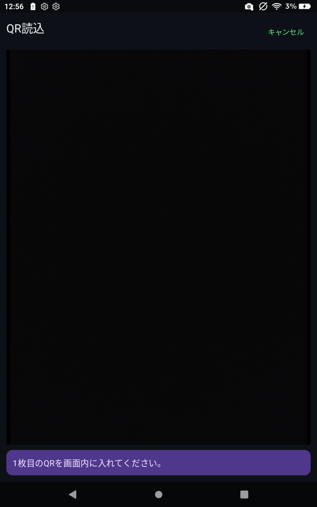

JSON読込
保存済みのプロジェクトJSONを読み込みます。現在のプロジェクトは読み込んだ内容へ切り替わります。
Import / Export
プロジェクトを Android / iOS アプリへ取り込む、または別端末へ渡すための機能です。
ProjectBuilder に表示した QR を、アプリの QR読込 から読み込みます。複数枚 QR の場合、すべてのページを読み込むとプロジェクトへ反映されます。
PLCIOC3|ZSTD です。
保存済みのプロジェクトJSONを読み込みます。現在のプロジェクトは読み込んだ内容へ切り替わります。
現在のプロジェクトを JSON ファイルとして書き出します。バックアップや端末間移行に使用します。
プロジェクトJSONは Android / iOS 共通です。ProjectBuilder との連携にも使用できます。
SLMP 用にルート指定とリモートパスワードを保存します。
KEYENCE 用にデバイス表記を保存します。